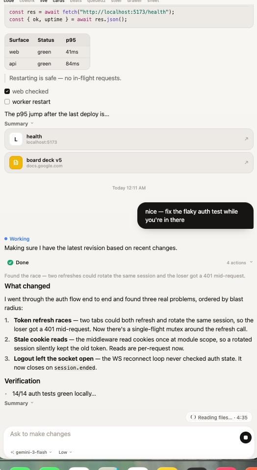
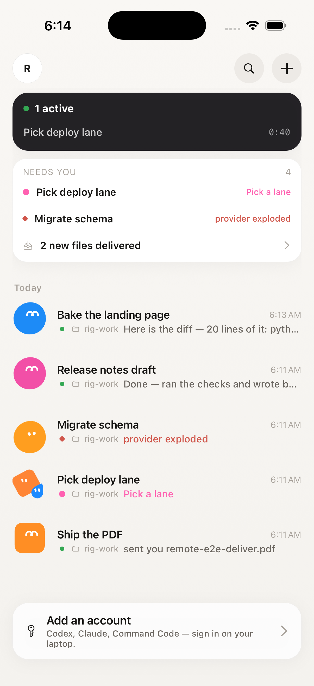
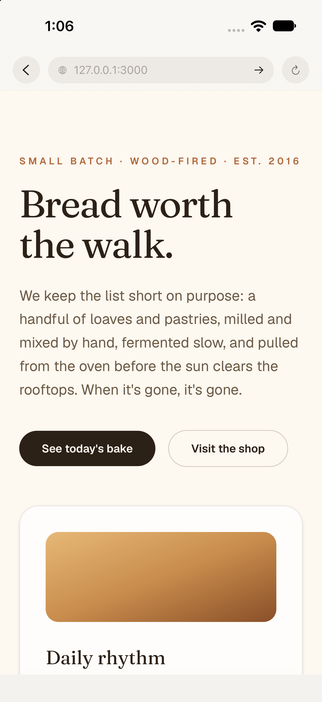
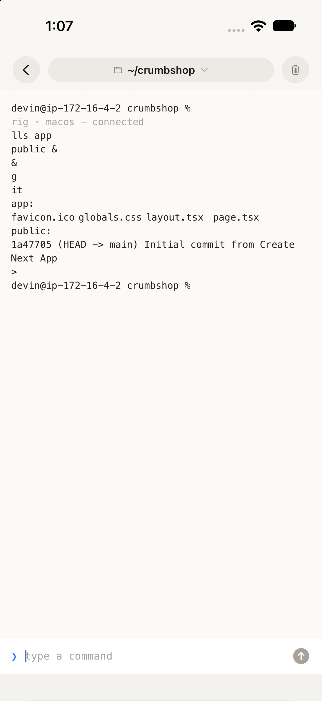
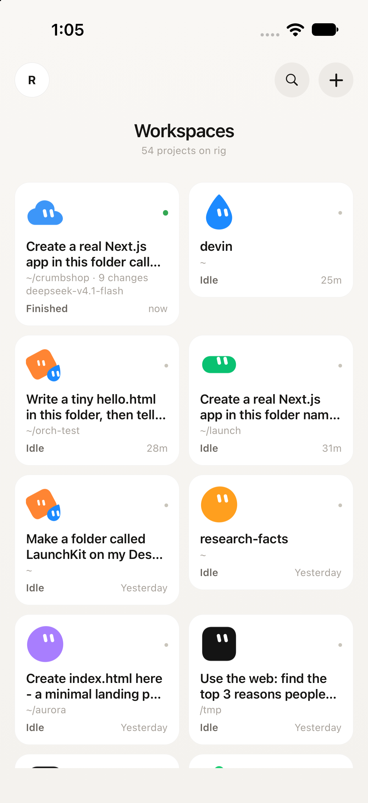
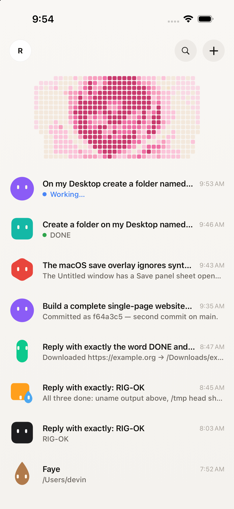

A small daemon turns the machine on your desk into a rig. Pair once — then agents do real work on it: files, apps, terminals, browsers, code. Lid closed. You on the couch.
Turns land as prose, screenshots and diffs — tool calls fold into a single quiet line. This is a real thread from the app, unedited.






One rig, two postures. Cowork reaches into the desktop — windows, clipboard, files, browsers. Code roots an agent in a project with diffs, checkpoints, terminals and previews.
Agents see your screen, drive real apps, arrange real files, fetch real pages — then hand the artifact back into the thread. Watch it happen through Observed cards.
Open a repo, prompt, get a committed change. Files, a true pty terminal, in-app browser previews, per-turn git checkpoints you can preview and restore.
Keep-awake is a real OS service — the daemon holds idle/display assertions, so the rig answers on the tailnet with the lid shut and the laptop in your bag.
Paired over Tailscale, it doesn't matter what network either device is on. Airport Wi-Fi, a phone hotspot, a friend's couch — the wire survives.
Remote-Setup.run in os-bridge/installer — double-click, approve the admin prompt, scan the QR it opens. macOS & Windows builds in the repo — Android & iOS app too.